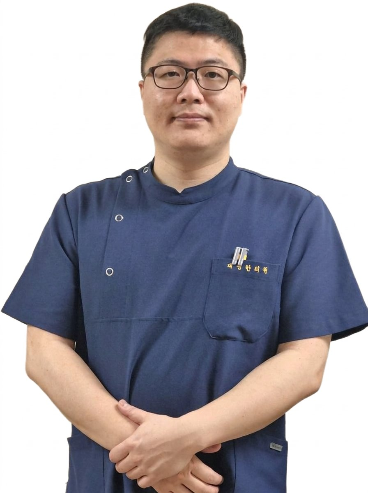

유명석 원장
대한침도의학회 회장 | 한의학 박사
침도 치료 전문 | 척추·관절 질환 전문

진료 요일
화, 수, 금, 토
예약 문의
📞 02-2671-7191
💼 소개
유명석 원장은 2004년 대명한의원 개원 이후 20년 넘게 침도 치료 분야에서 한국을 대표하는 권위자로 활동하고 있습니다. "한의사를 교육하는 한의사"로 불리며, 국내외 의료진을 대상으로 침도 치료 기법을 교육하고 있습니다.
정침학회와 연부조직한의학회를 설립하며 침도 의학의 발전을 이끌어왔으며, 현재 대한침도의학회 회장으로서 침도 치료의 표준을 정립하고 국내외에 그 우수성을 알리는 데 힘쓰고 있습니다.
🎖️ "한의사를 교육하는 한의사"
매년 수 백명의 한의사를 교육하며, 미국·캐나다·러시아·중국 등 전 세계 10개국 이상의 의료진을 대상으로 정침(RSN) 침도 치료 기법을 강의하고 있습니다. 국제 학술대회(ICMART, ISAM 등)에서 정기적으로 연구 결과를 발표하며 침도 의학의 세계화를 선도하고 있습니다.
🎓 학력 및 주요 경력
- 2004년 원광대학교 한의과대학 졸업
- 2004년 대명한의원 개원
- 2017년 The Honorary Degree of Doctor of Philosophy in Oriental Medicine from American Liberty University
- 가천대학교 겸임교수 (2020-2022)
- 경희대학교 외래교수 (2020)
- 동국대학교 외래교수 (2025)
🏆 주요 활동 및 수상
- 2012년 정침학회 설립 및 회장 역임
- 2016년 대한연부조직한의학회 설립 및 회장
- 2022년~현재 대한침도의학회 회장
- 2010년~현재 RSN(Ryu's Soft tissue & Nerve) Acupuncture & Acupotomy 강좌 운영
- 국제 학술대회 정기 발표 (ICMART, ISAM 등)
- SCI급 국제 학술지 논문 게재 다수
📚 주요 발표 논문 및 연구
ORCID: 0000-0001-9349-8124
📄 국제 학술대회 발표
- 2025년 12월 - Acupotomy Treatment for Cervical Radiculopathy (Live Session, ICMART)
- 2024년 9월 - Patients Complaining of Headache with a Combination of Korean Medicine Treatment, Focusing on Acupotomy Treatment: An observational Registry Study (Live Session, ICMART)
- 2019년 9월 - The Indications and Limitations of Acupotomy Treatment (중부권 학술대회, 대한한의학회)
- 2018년 10월 - Acupotomy treatment of OPLL (ISAM)
- 2018년 10월 - Acupotomy treatment of chronic facial palsy (한중 심포지엄, 대한한의학회)
- 2014년 11월 - Acupotomy treatment of low back pain due to TLJ Syn. (Huanan's Acupotomy society, 중국)
📑 SCI(E)급 학술지 게재 논문
- 2023년 - 견비통 침도 치료의 효과와 안전성에 관한 다기관 레지스트리 연구 (SCI(E)저널 게재, 대한침도의학회)
- 침도 치료의 임상 효과에 관한 체계적 문헌 고찰
- 만성 근골격계 통증 환자에 대한 침도 치료의 유효성 연구
🌍 글로벌 강의 경력
미국 LA, San Jose, Virginia 침구사 대상 RSN 침 과정 매년 강의
캐나다 밴쿠버 의료진 대상 침도 치료 초청 강연
러시아 모스크바 의사 대상 침도 치료 워크숍
중국 장춘대학교, 곤명대학교 해부학 연수 과정 강의
Global 한의학 세미나 (폴란드, 영국, 오스트리아, 스웨덴 의사 대상)
ICMART 국제 학술대회 Live Session 발표
🎯 전문 진료 분야
척추 질환
목디스크, 허리디스크
척추관협착증, OPLL
관절 질환
오십견, 어깨 통증
무릎 관절염
신경 질환
만성 두통, 안면마비
이명, 삼차신경통
만성 통증
만성 요통, TLJ 증후군
근막통증증후군
수술후 후유장애
구원모 원장
한의사
침도 치료 | 통증 치료 전문

진료 요일
월, 화, 목, 금, 토
예약 문의
📞 02-2671-7191
💼 소개
구원모 원장은 대명한의원에서 침도 치료를 전문으로 하는 한의사로, 류명석 원장의 침도 치료 철학과 기법을 함께 연구하고 발전시켜 나가고 있습니다.
정밀한 해부학적 지식을 바탕으로 한 침도 치료를 통해 만성 통증으로 고생하는 환자들에게 효과적인 치료를 제공하고 있으며, 환자 중심의 세심한 진료로 높은 만족도를 얻고 있습니다.
🔬 정밀한 진단과 치료
X-ray, 초음파 등 영상 진단 기기를 활용한 정확한 진단을 통해 환자 개개인의 상태에 맞는 맞춤형 침도 치료를 제공합니다. 체계적인 치료 계획과 꼼꼼한 사후 관리로 치료 효과를 극대화합니다.
🎓 학력 및 경력
- 동의대학교 한의학과 졸업
- 전 서당진료소 진료소장
- 전 강서한의원
- 전 서울스마트요양병원
- 현 대명한의원 진료 원장
📚 전문 교육 및 연수
- 추나교육 이수
- 침도의학회 2023년 동계 해부연수과정 수료
- 침도의학회 2023년 하계 해부연수과정 수료
- 침도의학회 2024년 동계 해부연수과정 수료
- 서울시 어르신 한의약 건강증진사업 참여
🏛️ 학회 활동
- 대한침도의학회 정회원
- 대한통합방제한의학회 정회원
- 대한통합방제한의학회 정보통신이사
- 고령자채록사업단 채록단원
🏆 전문 분야
- 침도를 활용한 근골격계 질환 치료
- 만성 통증 질환 관리
- 척추 및 관절 질환 치료
- 신경 포착 증후군 치료
- 스포츠 손상 재활
🎯 주요 진료 분야
척추 통증
목 통증, 허리 통증
디스크 질환
관절 통증
어깨 통증, 팔꿈치 통증
손목·무릎 통증
근육 통증
근막통증증후군
만성 근육통
신경 통증
좌골신경통
말초신경 포착증
💬 진료 철학
"환자의 통증을 정확히 이해하고, 근본 원인을 찾아 해결하는 것이 진정한 치료입니다. 대명한의원에서는 침도 치료를 통해 최소한의 침습으로 최대한의 효과를 내는 치료를 추구합니다. 환자 한 분 한 분에게 정성을 다해 치료하겠습니다."